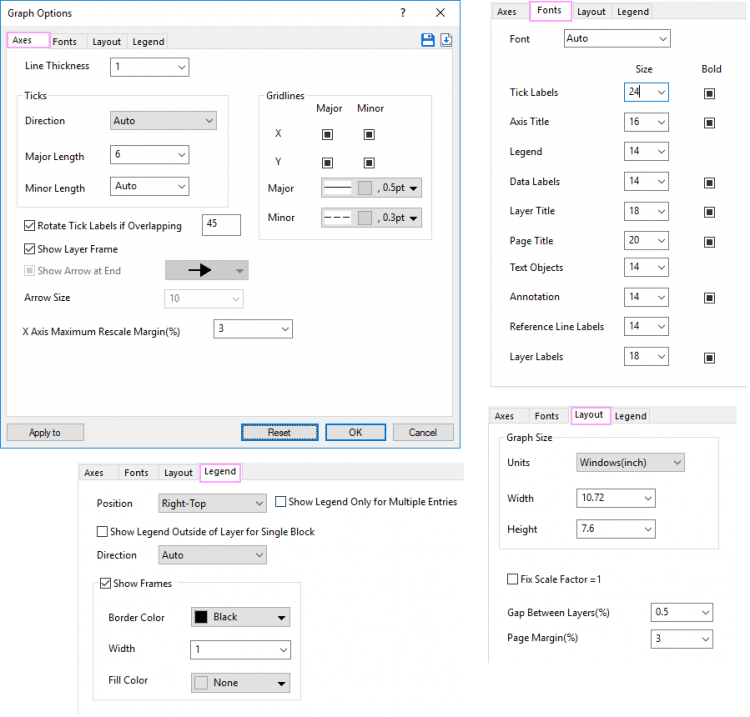
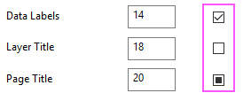
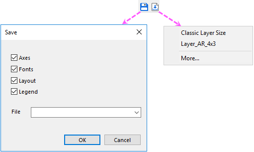
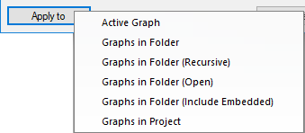
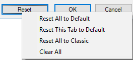

Dialog Grafikoptionen verwenden, um Diagrammstandard festzulegen
Graph-Options-Set-Graph-Default
Neben der Funktion Designs verwalten zum globalen Anwenden von Stilen/Formaten auf Diagramme, können Sie auch den Dialog Grafikoptionen verwenden, um Standardformat/-stile der Diagramme zu ändern.
- Wählen Sie Einstellungen: Grafikoptionen im Hauptmenü.

Hinweis: Standardmäßig wurden einige Standardeinstellungen mit einem globalen Systemdesign ausgeliefert. Sie können einige Optionen als Auto sehen. Wenn eine Einstellung im Dialog Grafiktoptionen geändert wurde, hat sie eine höhere Priorität als das Systemstandarddesign und wird auf die integrierten Systemvorlagen angewendet, aber nicht auf die Anwendervorlagen.
 | In diesem Dialog gibt es mehrere Kontrollkästchen, die drei Zustände haben:

- Aktiviert: Schaltet diese Einstellung als Standard ein.
- Deaktiviert: Schaltet diese Einstellung aus.
- Schwarzes Quadrat innen: Setzt diese Option auf Automatisch. Das bedeutet, dass das jeweilige Systemdesign bzw. die festgelegte Vorlage verwendet wird.
|
Einstellungen auf verschiedenen Registerkarten
Achse
Liniendicke
Ändern Sie die Liniendicke für die Achsen.
Linienfarbe
Ändern Sie die Linienfarbe für die Achsenlinien. Die ausgewählte Farbe wird auf alle Achsenlinien angewendet. Bitte beachten Sie,
- wenn Achsenlinienfarbe auf Auto gesetzt ist, wird diese ausgewählte Farbe nicht angewendet.
- Die Linienfarbe des Layerrahmens passt sich der Achsenfarbe an.
- Die Linienfarbe von Achsenanfang und Achsenende auf der Registerkarte Referenzlinie passt sich auch der Achsenlinie an. Wenn nur eine Achsenlinie gezeigt wird, passt sich die Linienfarbe der gezeigten Achsenlinie an. Wenn es mehrere Achsenlinien gibt, passt sich die Linienfarbe der unteren Achse an.
Hilfsstriche
Ändern Sie die Hilfsstrichsrichtung, die Länge der großen und kleinen Hilfsstriche. Diese Option ist nur für kartesische 2D-Diagrammlayer verfügbar.
Gitternetzlinien
Legen Sie fest, ob die Gitternetzlinien für große und kleine Hilfsstriche und die Linienstile der Gitternetzlinien für große und kleine Hilfsstriche jeweils separat gezeigt werden sollen.
Hilfsstrichsbeschriftungen bei Überschneidung drehen
Legen Sie fest, ob die Hilfsstrichsbeschriftungen bei Überschneidung der Beschriftungen gedreht werden sollen. Geben Sie einen Winkelwert ein, um die Hilfsstrichsbeschriftungen zu drehen.
Geben Sie eine positive Zahl ein, um die Beschriftungen entgegen dem Uhrzeigersinn zu drehen, und eine negative Zahl, um die Beschriftung im Uhrzeigersinn zu drehen.
Layerrahmen zeigen
Legen Sie fest, ob der Layerrahmen für das aktuelle Layer gezeigt werden soll. Diese Option ist nur für kartesische 2D-Diagrammlayer verfügbar.
Pfeil am Ende zeigen
Legen Sie fest, ob am Ende der Achsen ein Pfeil gezeigt werden soll. Sie können einen Pfeilstil aus der folgenden Auswahlliste wählen und die Pfeilgröße festlegen.
Diese Option ist standardmäßig deaktiviert und bei Deaktivierung der Option Layerrahmen zeigen aktiviert.
Rand für X-Achse neu skalieren (%)
Diese Option kann verwendet werden, um festzulegen, ob die Werte von Minimum und Maximum während der Neuskalierung der X-Achse mit Nullen aufgefüllt werden sollen. Diese Option entspricht der Option Rand neu skalieren (%) auf der Registerkarte Skalieren des Dialogs Achsen.
Zeichensätze
Die Optionen auf dieser Registerkarte werden verwendet, um die Schriftart und die fette Schrift für verschiedene Textobjekte im Diagramm zu steuern. Die Einstellungen beeinflussen sowohl die vorhandenen Objekte als auch den Standardstil der neuen Objekte, die hinzugefügt werden.
Schriftart
Ändern Sie die Schriftart aller Objekte im Diagramm, einschließlich der Diagrammtabellen.
Spezifische Objekte
Sie können die Schriftart und die fette Schrift der Hilfsstrichsbeschriftungen, Achsentitel, Legende, Datenbeschriftungen, Layertitel, Seitentitel, Textobjekte, Anmerkungen, Beschriftungen der Referenzlinien und Layerbeschriftungen ändern.
Layout
Diagrammgröße
Legen Sie die Diagrammgröße fest. Die Größenoptionen haben den gleichen Effekt wie die Größeneinstellungen unter der Gruppe Dimensionen auf der Registerkarte Drucken/Druckbereich des Dialogs Details Zeichnung.
Skalierungsfaktoren festlegen = 1
Legen Sie fest, ob der Skalierungsfaktor auf 1 gesetzt werden soll.
Sie können unter der Option Fester Faktor auf der Registerkarte Größe des Dialogs Details Zeichnung nachlesen, was der Skalierungsfaktor ist.
Abstand zwischen Layern (%)
Wenn es im Diagramm viele Layer gibt, können Sie diese Option dazu verwenden, den Abstand zwischen den Layern festzulegen. Die Einheit dieser Option ist % der Seitengröße.
Seitenrand (%)
Legen Sie den Rand des gesamten Diagramms fest. Die Einheit dieser Option ist % der Seitengröße.
Standardmäßig wurde der Seitenrand auf 3 % gesetzt. Es gibt einen zusätzlichen Rand oben, falls Sie einen Seitentitel oder Layertitel hinzufügen möchten.
Legende
Position
Legen Sie fest, wo die Legende positioniert werden soll.
Legende nur für mehrere Einträge zeigen
Zeigen Sie die Legende nur, wenn die Anzahl der Kurven im aktuellen Layer größer ist als 1. Wenn es im aktuellen Layer nur einen Datensatz gibt, wird für den aktuellen Layer keine Legende gezeigt.
Legende außerhalb des Layers für einzelnen Block zeigen
Legen Sie fest, ob die Legende außerhalb des Layers für jeden Diagrammlayer gezeigt werden soll. Das Deaktivieren dieses Kontrollkästchens zeigt die Legende innerhalb des Layerrahmens bei einer bestimmten Position.
Richtung
Legen Sie fest, wie die Legendeneinträge angeordnet sein sollen, horizontal oder vertikal.
Rahmen zeigen
Legen Sie fest, ob ein Rahmen für die Legende gezeigt werden soll. Wenn der Rahmen gezeigt werden soll, können Sie die Rahmenfarbe, Rahmenbreite und Füllfarbe innerhalb des Rahmens ändern.
Diagrammname
Sie dürfen den Diagrammlangnamen und den Seitentitel für vorhandene Diagramme oder zukünftig erstellte Diagramme festlegen. Sie können die voreingestellten Notationen im unten gezeigten Ausklappmenü wählen, um den Diagrammlangnamen und den Seitentitel zu definieren.

Hinweis: Wenn Sie ein Diagramm auf Grundlage einer vordefinierten Diagrammvorlage erstellen und Diagrammkurzname und Diagrammlangname in der Vorlage voreingestellt sind, sollte die Vorlageneinstellung eine höhere Priorität haben und Änderungen, die Sie auf der Registerkarte Diagrammname vorgenommen haben, nicht angewendet werden.
Sie können auf dieser Seite weitere Anpassungsmöglichkeiten des Diagrammlangnamens und Seitentitels finden.
Schaltflächen Einstellungen speichern und laden
Es gibt oben rechts im Dialog zwei Schaltflächen: Schaltfläche Einstellungen speichern unter und Schaltfläche Einstellungen laden.

- Durch Klicken auf die Schaltfläche Einstellungen speichern unter … wird ein Dialog angezeigt --Speichern--, der 4 Kontrollkästchen enthält mit den Registerkartennamen. Per Standard sind alle diese Kästchen aktiviert. Sie können unten einen Dateinamen eingeben. Falls Sie eines der Kontrollkästchen deaktiviert haben, werden die Einstellungen dieser entsprechenden Registerkarte nicht in der Designdatei gespeichert. Wenn Sie diese vorgespeicherte Designdatei später laden, werden die Bedienelemente auf dieser Registerkarte auf Auto gesetzt.
- Durch Klicken auf die Schaltfläche Einstellungen laden wird ein Ausklappmenü mit einer Liste angezeigt, die die Designdatei(en) (.oth) aus dem Ordner \Anwenderdateiordner\Themes\Graph Options in alphabetisher Reihenfolge aufführt. Die maximale Anzahl der hier aufgeführten Designdateien ist 10. Sie können auch das Element Mehr ... wählen, um den Dateibrowser zu öffnen und eine andere Designdatei auszuwählen. Per Standadrd wird der Ordner \Anwenderdateiordner\Themes\Graph Options geöffnet.
Schaltflächen unten
Anwenden auf

Wählen Sie die Zieldiagramme, um die Format-/Stileinstellungen anzuwenden. Aktives Diagramm ist nur verfügbar, wenn das aktive Fenster ein Diagrammfenster ist.
Zurücksetzen

- Alle auf Standard zurücksetzen: Setzen Sie die Optionen auf allen Registerkarten der aktuellen Registerkarte zurück, um zu den Standardeinstellungen des Systemstandarddesigns zurückzukehren.
- Diese Registerkarte auf Standard zurücksetzen: Setzen Sie die Optionen der aktuellen Registerkarte zurück, um zu den Standardeinstellungen des Systemstandarddesigns zurückzukehren.
- Alle auf Klassisch zurücksetzen: Setzen Sie alle Optionen im Dialog zurück, um den klassischen Formateinstellungen zurückzukehren, das heißt den Standardeinstellungen in Versionen vor 2025b.
- Alle löschen: Löschen Sie alle Einstellungen.